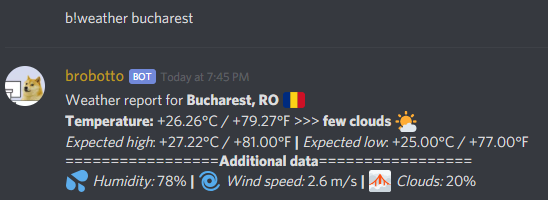

aham
As we all most likely know, Discord is a pretty great chatting service. What exactly makes this service great is the ability to customise the chatrooms with all these roles, nicknames, channels etc. A really cool feat is the introduction of bots.
They are fun.
So I made one.
how???
Fear not reader for I shall enlighten you. I wrote mine in python but there is possible to write it in JS too. I'm not sure about other languages but I believe JS and PY are the only ones.
Most work is done by the
discord.py API wrapper. Something that was fairly weird to me was the
async/await syntax, as I have never used it before and I had no idea what it really was. I read a bit into it and they turned out to be coroutines! I had so much fun working with them for the first time back when I worked on
GONP in Unity.
But this time it was weirder. I can't really tell why, probably because all the coroutines do is send messages? Nothing really interesting (so far!). I have yet to learn the full potential of them but I'm highly curious so I'll definitely read more into it.
okay, but what does it do?
Well......
He talks randomly, mostly says dumb stuff me and some friends would find funny in the context of a doge bot. Replies to different message triggers and sometimes denies your commands. Most interesting commands (so far) are b!pokemon, b!etika and b!weather. I'll take them one by one.
b!pokemon returns a random pokemon entry. Pretty simple, takes a pokemondb link and concatenates a random number. You can also pick specific generations.
b!etika returns a random image of Etika smiling. Why? Because I love him and seeing him smile is nice. At the point of writing this there are about 43 images in Brobotto's collection. Might grow as I come across them.
b!weather is my favorite. It was the most interesting to work on. It returns a detailed weather report of the city of your choosing. Like this:

First thing that I did was look for a weather API. That was so tideous, I compared a bunch since most were behind paywalls and I was reluctant to try the free trials due to their limited uses. I tried yahoo weather's library but that didn't work for some reason. In the end I settled upon OpenWeatherMap's API. I'm glad I did because I had to work with the requests lib and json files. While they are fairly easy things to comprehend/use, I've never used them before so it was nice and refreshing to learn something new.
hosting and conclusion
As it may have been expected, the actual python script(s) that run Brobotto have to be hosted somewhere. They're on my raspi. It was an entire project on it's own, using a mini LCD attached to the GPIO pins. I barely used my pi and always wanted to do something cooler than just have a bunch of emulators on. It runs Debian and boots in terminal mode. The LCD is fairly small (the smallest one actually), an Adafruit 2.4 inch PiTFT HAT. Making the pi use the LCD as primary display was a pain couse I couldn't find drivers but I ended up learning not only how to use git and get more accustomed to the unix terminal in the process, but also how to write shell scripts. The pi is neatly plugged on my desk, in it's case with the lid on. I only need to take it off whenever I update brobotto (which i have a .sh script for to automate the process, since it uses files not in the git repo, such ass the discord token and weather API key) or when I run it. Sometimes the updating part is done via SSH from my desktop. Overall I learned a bunch. It was fun figuring my pi out. I feel like I gained a lot of experience doing this.
Link to the github repo is the image of the lil doges at the top. Brobotto's invite link is in the README in said repo.